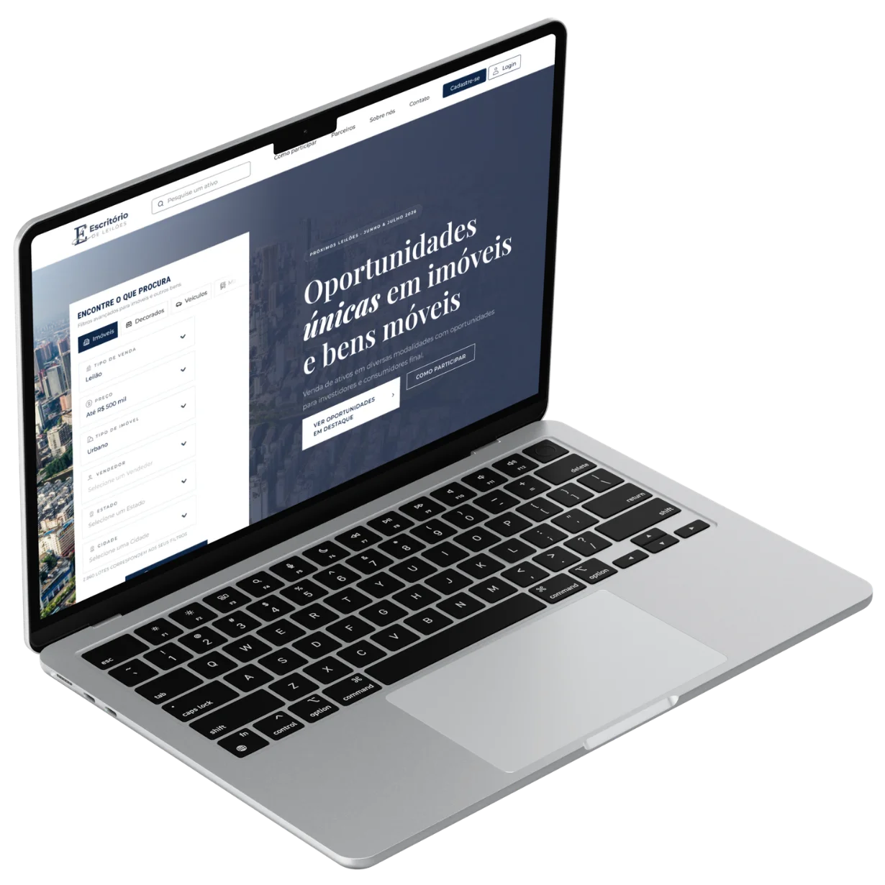
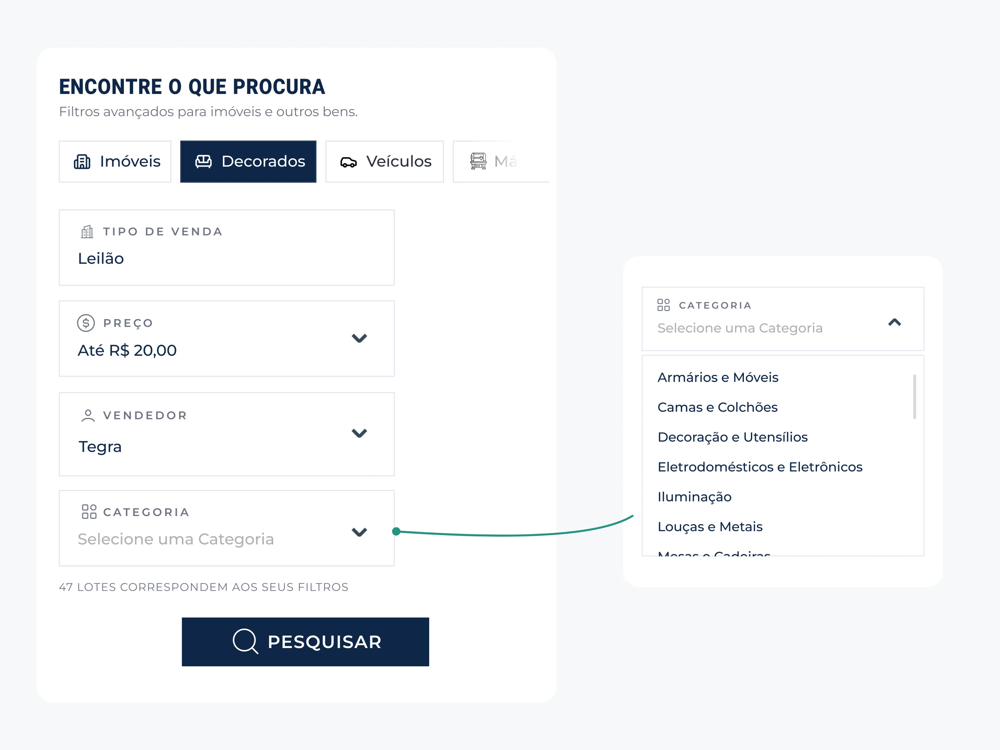
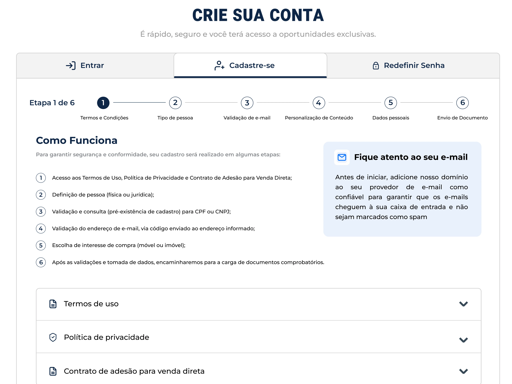
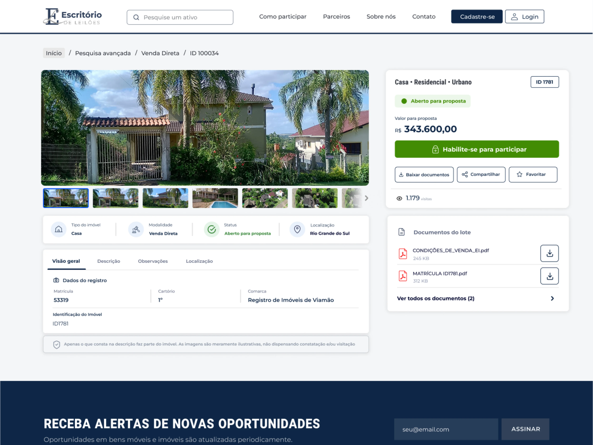
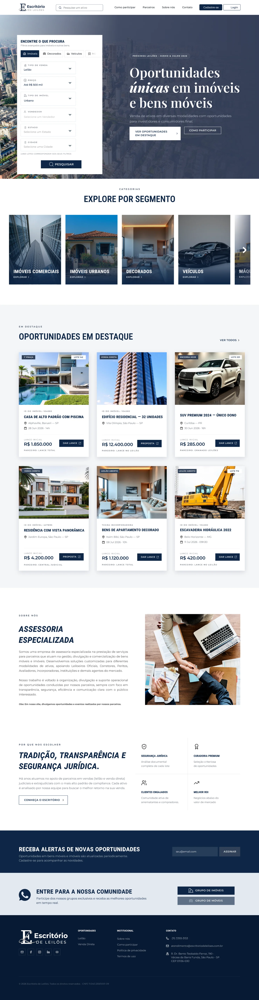
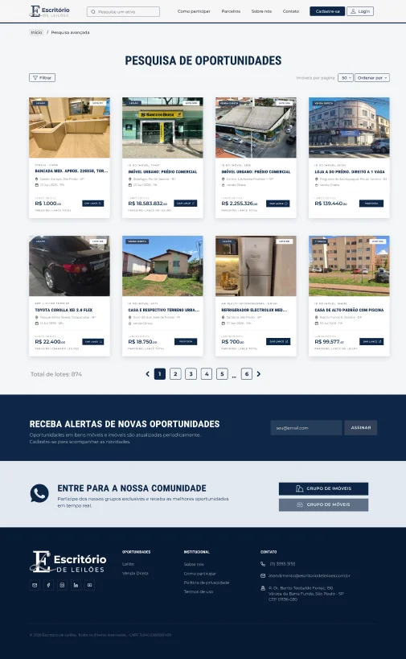
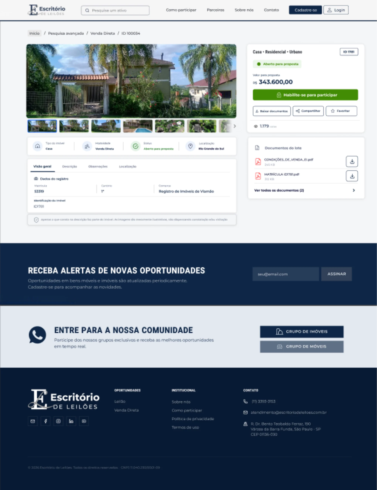
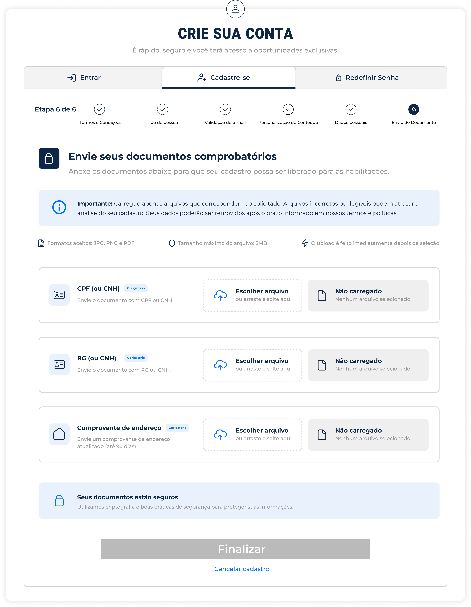

Escritório de Leilões
Redesign da plataforma digital e portal de oportunidades focado em transparência e confiança.

O Desafio
A interface anterior apresentava ruídos na navegação e falta de clareza nas informações dos lotes, o que gerava desconfiança nos usuários e aumentava a taxa de abandono durante os lances.
A Solução
Redesenhei a arquitetura de informação e a hierarquia visual do portal, criando uma navegação transparente, com cards de lotes objetivos, chamadas claras para ação e foco na acessibilidade e segurança do arrematante.
Arquitetura Unificada
O maior desafio foi consolidar duas frentes de negócio distintas em uma única experiência digital. Desenhei uma arquitetura que segmenta com clareza os leilões parceiros e as oportunidades de venda direta, permitindo que o usuário navegue por ambos os ecossistemas sem perder o contexto.
01. Filtros Dinâmicos por Categoria
A interface foi estruturada para reunir universos distintos, como imóveis, veículos, máquinas e itens de apartamentos decorados em uma única experiência de busca. A partir da categoria selecionada, os filtros se adaptam ao contexto de cada ativo, exibindo apenas os critérios relevantes para aquela pesquisa. Dessa forma, diferentes jornadas são concentradas em um mesmo fluxo, reduzindo cliques desnecessários e tornando a navegação mais simples, previsível e organizada.

02. Onboarding e Validação Progressiva
Por se tratar de um ecossistema de leilões, o processo exige rigidez jurídica no recolhimento de dados e documentos. Para mitigar a taxa de abandono, a jornada de cadastro foi estruturada de forma progressiva e transparente. Interfaces claras de upload de documentação contam com validações em tempo real para arquivos e formatos, transformando uma etapa burocrática em um fluxo fluido e seguro.

03. Transparência na Tomada de Decisão
A página do lote concentra as informações essenciais para a tomada de decisão, com destaque para status, valor e ação de participação. Dados técnicos, descrição, localização e documentos foram organizados de forma clara, reduzindo a sobrecarga de informação e transmitindo mais segurança durante a jornada.

Interface de Alta Fidelidade
Uma visão geral das principais telas do ecossistema desktop, unificando consistência visual, acessibilidade e uma interface limpa focado na experiência do usuário.




